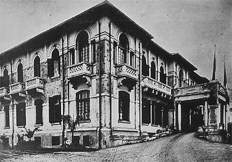

O Hospital do Senhor Inglês é um hospital pernambucano renomado, fundado por John Wallace Smith na cidade do Recife 28 anos depois da indepêndecia.
John Wallace sempre teve cuidado com os pacientes de seu hospital, ao mesmo tempo que desenvolvia uma filosofia baseada no método científico.
Sendo não só um médico como um cientista em busca de curas.
Nosso avanço continuou depois da virada do século, com métodos e curas que foram inventadas aqui em Pernambuco.
Eles acabaram sendo cruciais na primeira e segunda guerra para o tratamento tanto de soldados quanto de civís.

E não paramos por aí!
A dedicação do hospital como um todo às novas táticas de tratamento na medicina foram feitas, e continuam a ser feitas, com a colaboração das novas e mais avançadas tecnologias.

Hoje em dia, nós sempre tentamos levar a diante essa filosifia inovadora, sempre tentando aproveitar dos novos desenvolvimentos nas diferentes áreas da medicina e além!
O Hospital do Senhor Inglês também colabora com faculdades de medicinas do mundo todo para que possamos cuidar da sua saúde com as mentes mais brilhantes a nossa disposição.
Com mais de 150 anos de história, nós sempre tentamos estar na frente para podermos fazer do mundo um lugar melhor. Especialmente para você.